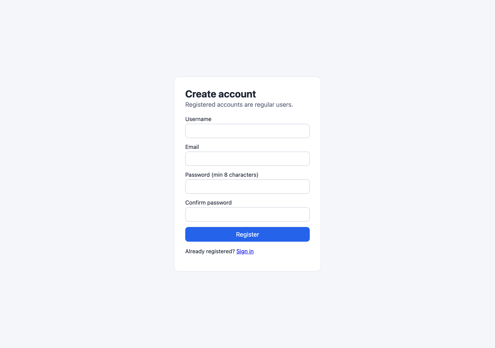
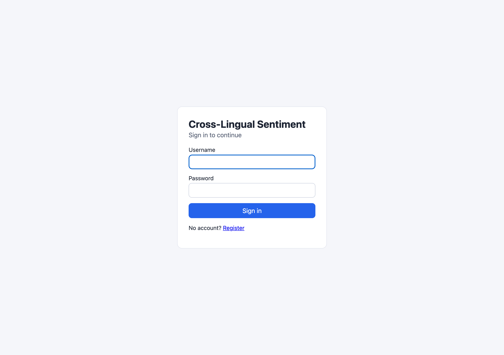
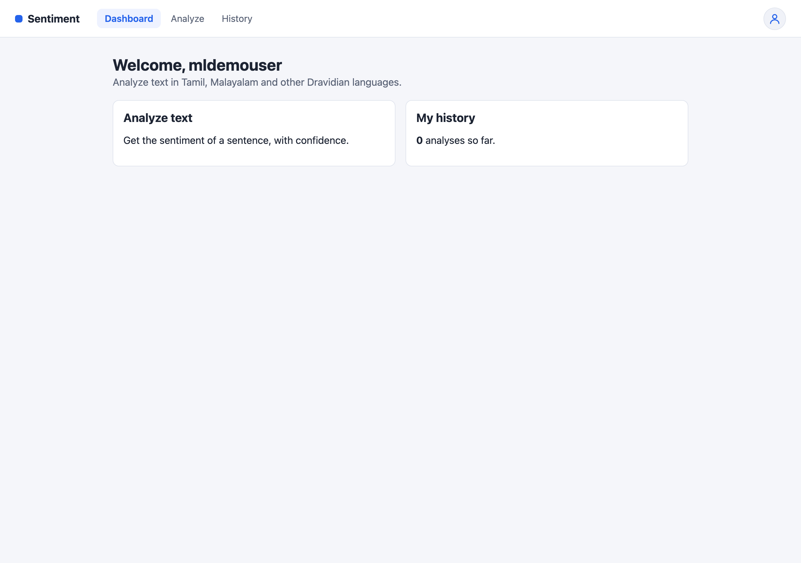
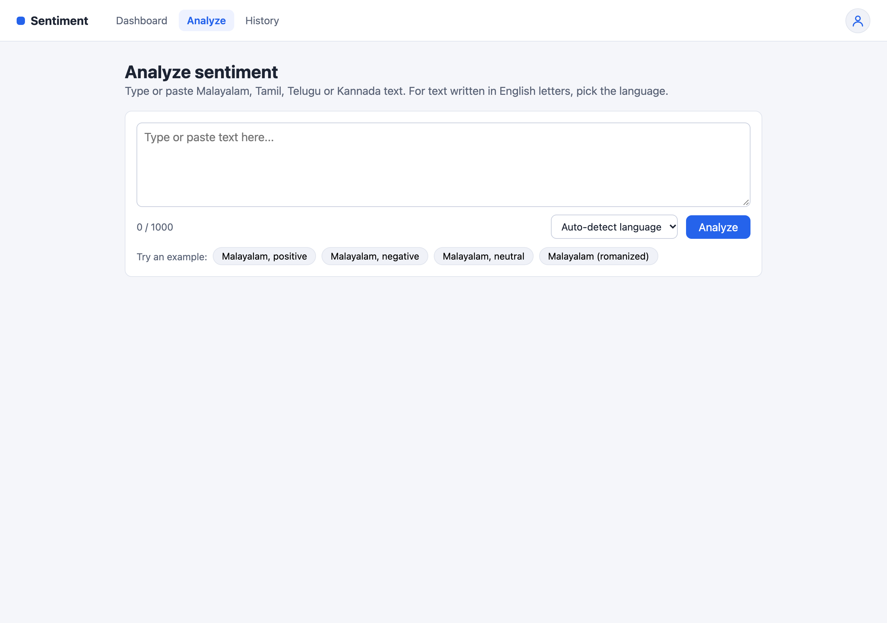
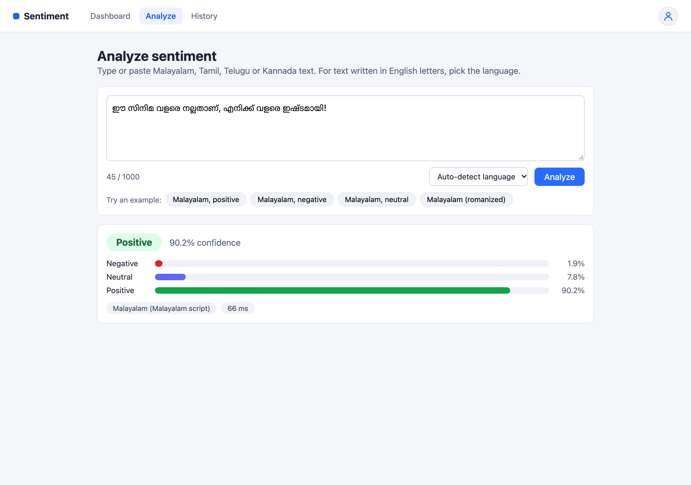
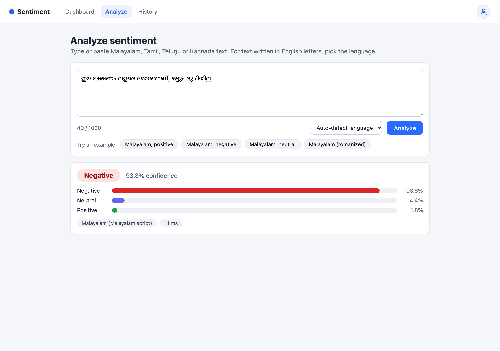
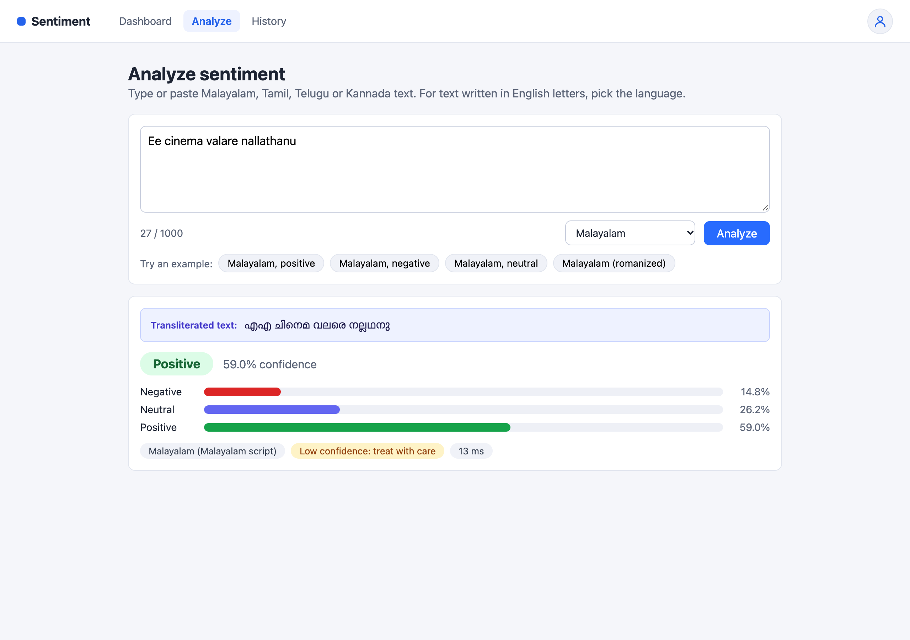
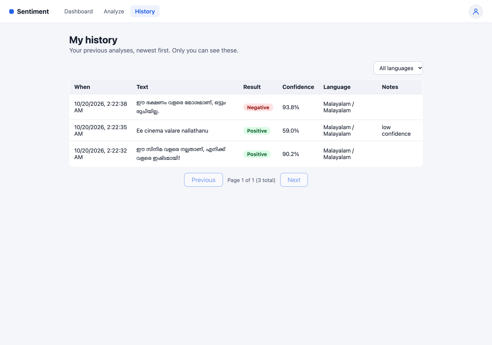
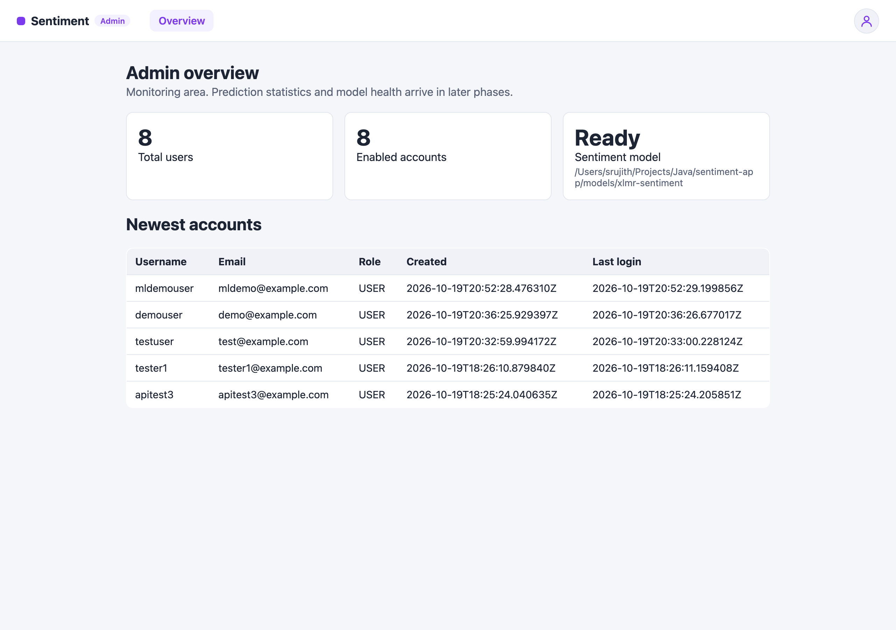

Cross-lingual sentiment analysis for Dravidian languages (Tamil, Malayalam, Kannada, Telugu)
Application URL: http://localhost:8080
The Sentiment Analysis application determines whether a piece of text expresses a Positive, Negative, or Neutral sentiment. It is powered by the XLM-RoBERTa multilingual transformer model, trained specifically for Dravidian languages, and works with text written in native script or in romanized (English-letter) form.
Tamil, Malayalam, Kannada, and Telugu in both native script and romanized Latin text.
Romanized text is automatically converted to native script via ICU4J for higher accuracy.
Every result shows a confidence percentage and per-class probability breakdown.
All your analyses are saved and can be browsed, filtered by language, and paginated.
The application uses a pre-trained multilingual transformer model, exported to ONNX format for fast inference inside the JVM.
| Model Name | cardiffnlp/twitter-xlm-roberta-base-sentiment |
|---|---|
| Architecture | XLMRobertaForSequenceClassification |
| Base Model | XLM-RoBERTa Base (multilingual, 100+ languages) |
| Hidden Layers | 12 transformer layers, 768 hidden units |
| Output Labels | Negative Neutral Positive |
| Inference Engine | DJL (Deep Java Library) 0.36.0 + ONNX Runtime |
| Transliteration | ICU4J 75.1 (Latin → Tamil / Telugu / Kannada / Malayalam) |
| Max Input Length | 256 tokens |
| Low Confidence Threshold | 60% (results below this are flagged) |
| Model Path | ./models/xlmr-sentiment |
cardiffnlp/twitter-xlm-roberta-base-sentiment), fine-tuned on multilingual Twitter data. It is exported to ONNX format via the python/export_model.py script and runs entirely inside the JVM — no Python or GPU is needed at runtime.Before using the application, ensure the following prerequisites are met:
| Requirement | Details |
|---|---|
| Web browser | Any modern browser (Chrome, Safari, Firefox, Edge) |
| Application URL | http://localhost:8080 (default, or the URL provided by your administrator) |
| Account | Register a new account or use credentials provided to you |
/user/*). Administrators access the Admin area (/admin/*). Each role can only see its own pages.
/registerhttp://localhost:8080/register or click "Register" on the login page.

/loginhttp://localhost:8080/login. Any unauthenticated URL automatically redirects here.

/user/dashboardThe dashboard is your landing page after login. It provides quick links to:
The top navigation bar is visible on every user page and includes:
| Item | Action |
|---|---|
| Sentiment (brand) | Returns to the Dashboard |
| Dashboard | Opens the Dashboard |
| Analyze | Opens the Analyze page |
| History | Opens the History page |
| Avatar icon (top-right) | Shows your username and a Logout button |

/user/analyze

Below the text area, pre-loaded example buttons let you quickly test the system. Clicking a chip fills the text area and (for romanized examples) selects the language automatically.
When you type Dravidian text using English letters (romanized / Latin script), the model's accuracy drops significantly (from ~100% to ~20%). The application solves this by automatically transliterating your romanized text into native script before analysis using the ICU4J library.

Ee cinema valare nallathanu
After analysis, the result panel displays several pieces of information:
| Element | Description |
|---|---|
| Sentiment Label | The predicted sentiment: Positive, Negative, or Neutral |
| Confidence Score | How confident the model is in its prediction (0%–100%). Higher is more reliable. |
| Probability Bars | Visual breakdown showing the probability for each of the three sentiment classes. The longest bar corresponds to the predicted label. |
| Language & Script | The detected (or selected) language and script type, e.g., "Malayalam (Malayalam script)" or "Malayalam (Latin script)". |
| Transliterated Text | Shown only for romanized input — the native-script version the model actually analyzed (blue box). |
| Latency | Time taken for the model inference in milliseconds. |
| Code-mixed (warning) | Appears when the text contains multiple scripts (e.g., Malayalam mixed with English). |
| Low confidence (warning) | Appears when the confidence is below the threshold (default: 60%). Treat the result with caution. |

/user/historyThe History page shows all your past analyses in a table, sorted newest first. Key features:
Use the dropdown at the top to filter by a specific language:
| Filter Option | Shows |
|---|---|
| All languages | Every analysis you've run |
| Tamil / Malayalam / Kannada / Telugu | Only analyses in the selected language |
| Not identified | Analyses where the language could not be detected |
Results are displayed 10 per page. Use the Previous and Next buttons at the bottom to navigate between pages. The current page indicator (e.g., "Page 1 of 1 (3 total)") is shown in the center.
| Language | Code | Native Script | Romanized (Latin) | Transliteration |
|---|---|---|---|---|
| Tamil | ta |
தமிழ் (Tamil script) | "Indha padam romba nalla irukku" | Latin → Tamil |
| Malayalam | ml |
മലയാളം (Malayalam script) | "Ee cinema valare nallathanu" | Latin → Malayalam |
| Kannada | kn |
ಕನ್ನಡ (Kannada script) | "Ee cinema tumba chennagide" | Latin → Kannada |
| Telugu | te |
తెలుగు (Telugu script) | "Ee cinema chala bagundi" | Latin → Telugu |
The Admin Dashboard is accessible only to users with the ADMIN role. Regular users cannot access this area.

/admin/dashboardThe Admin Dashboard shows:
| Shortcut / Tip | Description |
|---|---|
| Ctrl + Enter (or ⌘ + Enter on Mac) | Run analysis from the text area (same as clicking Analyze) |
| Example chips | Click any chip below the text area to auto-fill sample text |
| Language memory | The language dropdown remembers your last selection across visits |
| Character limit | Maximum 1,000 characters per analysis. The counter shows remaining capacity. |
| Issue | Solution |
|---|---|
| "Please contact the administrator" on the Analyze page | The sentiment model is not loaded. Contact your admin to check the model files at the configured path (./models/xlmr-sentiment). |
| "Invalid username or password" at login | Double-check your username and password. Ensure your account hasn't been disabled by an admin. |
| Low confidence / wrong result on romanized text | Make sure you selected the correct language from the dropdown. Without it, transliteration won't activate and accuracy will be low (~20%). |
| "Unknown language" error | You provided an unsupported language code. The system supports only Tamil (ta), Malayalam (ml), Kannada (kn), and Telugu (te). |
| "Please enter some text" error | The text area is empty or contains only whitespace. Enter actual text before clicking Analyze. |
Cannot access /admin/dashboard |
Only ADMIN-role accounts can access admin pages. Regular user accounts will see a 403 Forbidden error. |
| Page not loading / connection refused | Ensure the application is running and accessible at the correct URL (default: http://localhost:8080). |